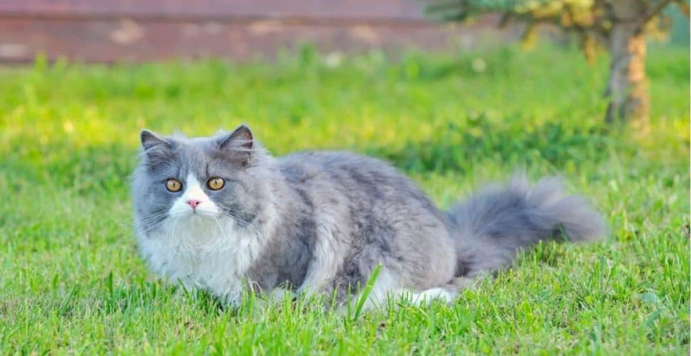
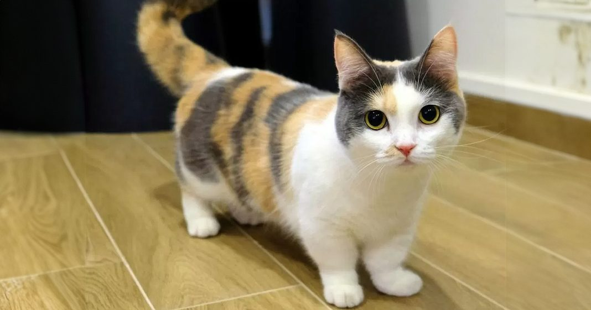
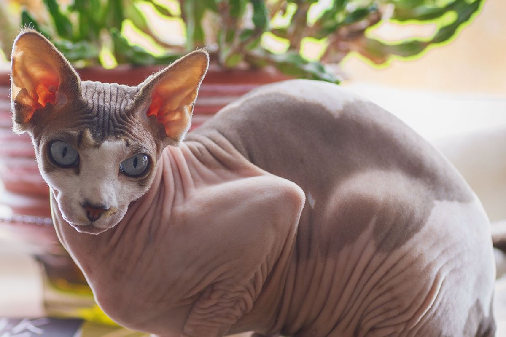
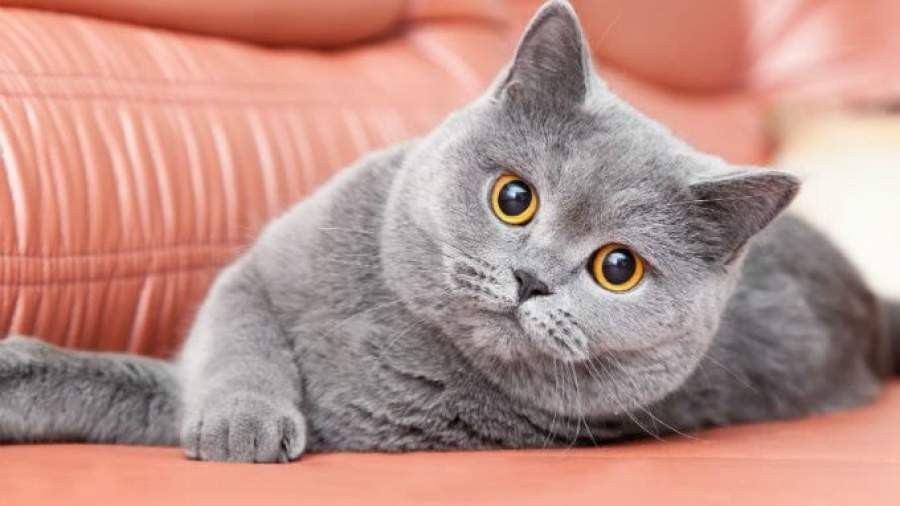

1. Kucing Domestik

Kucing domestik lebih dikenal dengan nama kucing kampung. Kucing kampung tidak memerlukan perawatan khususlayaknya kucing ras lain yang mempunyai karakteristik khas. Jadi, memilihara kucing kampung sangat mudah dilakukan.
2. Kucing Persia
Kucing persia merupakan salah satu ras kucing yang paling populer dijadikan hewan peliharaan baik lokal maupun internasional. Asal usul ras kucing persia adalah Persia yang saat ini menjadi Turki dan Iran. Jenis kucing ini juga memiliki kebiasaan yang lemah lembut, ramah, santai periang, dan cerdas. Parasnya yang menggemaskan dan unik membuat Kucing Persia jadi primadona para pecinta kucing.
3. Kucing Munchkin
Kucing Munchkin memiliki ciri khas bentuk tubuh yang unik, yakni tubuh mungil dan berkaki pendek meskipun usianya sudah dewasa. Karakter sifat kucing cukup pendiam dan manja. Kucing Munchkin sangat cocok dijadikan hewan peliharaan yang menggemaskan.
4. Kucing Sphynx
Kucing Sphynx adalah salah satu jenis kucing yang unik karena hampir tidak memiliki bulu sama sekali. Namun sebenarnya Kucing Sphynx masih memiliki bulu yang sangat pendek dan hampir menyerupai kulit. Uniknya lagi Kucing Sphynx juga menjadi satu-satunya jenis kucing yang memiliki kelenjar keringat.
5. Kucing British Shorthair
Kucing British Shorthair adalah jenis kucing yang memiliki bulu yang khas dan halus, mata yang besar dan kepala yang bulat. British Shorthair dikenal dengan ras kucing Inggris tertua dan kemampuan berburunya. Mereka sangat menyukai kedamaian dan keheningan, itulah sebabnya mereka sering disebut kucing yang mandiri.